Lế kỷ niệm ngày nhà giáo Việt Nam 20/11/2020
DIỄN VĂN CHÀO MỪNG LỄ KỶ NIỆM 38 NĂM NGÀY NHÀ GIÁO VIỆT NAM
Kính thưa các quý vị đại biểu, các vị khách quý!
Kính thưa các thầy giáo, cô giáo đã nghỉ hưu!
Kính thưa các thầy giáo, cô giáo, các đồng chí là cán bộ viên chức trong nhà trường!
Các em học sinh thân mến!
Có lẽ đã thành truyền thống, hàng năm, cứ đến tháng 11, trên khắp mọi miền Tổ quốc lại tràn ngập không khí hân hoan, phấn khởi của lớp lớp các thế hệ học sinh hướng về ngày nhà giáo Việt Nam 20/11, ngày mà cả xã hội với tấm lòng trân trọng, biết ơn, tôn vinh công lao cao cả đối với các thế hệ nhà giáo, những kỹ sư tân hồn gieo hạt, vun xới cho mùa vàng kiến thức, đạo lý, để cây đời mãi mãi xanh tươi, góp phần xây dựng quê hương đất nước đẹp giàu.
Hôm nay, giữa ngày hội lớn của những người làm công tác giáo dục, trong một không khí vô cùng ấm áp, sóng sánh niềm vui, đong đầy niềm hạnh phúc của tình thầy trò, đồng nghiệp, trước hết cho phép tôi thay mặt cho nhà trường xin gửi tới quý đại biểu, quý thầy cô cùng toàn thể các em học sinh lời chào trân trọng, lời chúc mừng tốt đẹp nhất!
Kính thưa quý vị đại biểu, thưa quý thầy cô!Các em học sinh yêu quý!
Ngày nhà giáo Việt Nam được tổ chức hàng năm vào ngày 20/11 tại Việt Nam là ngày hội của các nhà giáo và là ngày “Tôn sư trọng đạo” của toàn xã hội, nhằm mục đích tôn vinh những người hoạt động trong ngành giáo dục. Lịch sử ngày Nhà giáo Việt Nam 20/11 gắn liền với lịch sử của tổ chức giáo giới tiến bộ trên toàn thế giới. Để có được ngày truyền thống lịch sử ấy biết bao thế hệ các nhà giáo đã đấu tranh không ngừng chống lại mọi quan điểm và phương pháp giáo dục lạc hậu, phản động, coi thường người dạy học, coi thường nghề dạy học. Đấu tranh để bảo vệ những quyền và lợi ích chính đáng của các nhà giáo, để khẳng định vai trò và vị thế của Nhà giáo, của nghề dạy học trong xã hội. Ở nước ta , từ năm 1982, ngày 20/11 là ngày lễ mang tên “Ngày nhà giáo Việt Nam”. Để hàng năm, đến ngày 20/11, các cấp Ủy Đảng và chính quyền khắp cả nước, các ngành hữu quan, Ban đại diện cha mẹ học sinh và lớp lớp các thế hệ học trò đã dành cho các thầy giáo, cô giáo sự quan tâm toàn diện, sự biết ơn sâu sắc đối với các thế hệ nhà giáo đã cống hiến cho sự nghiệp trồng người.
38 năm qua, với truyền thống “Tôn sư trọng đạo”, “Uống nước nhớ nguồn” - ngày 20/11 đã và mãi mãi đi vào lòng người, khắc sâu trong tâm trí các thế hệ học trò, cha mẹ học sinh, các nhà giáo và toàn xã hội - đã đem lại cho các thầy cô biết bao niềm vui cháy bỏng, niềm vinh dự và tự hào lớn lao khi được làm việc và cống hiến trong nghề dạy học, “Nghề cao quí nhất trong những nghề cao quý”. Nhân diễn đàn này, tôi xin nói thêm một chút về truyền thống “tôn sư trọng đạo” của người Việt Nam ta. Không biết tự bao giờ truyền thống ấy đã trở thành hồn cốt dân tộc, nó lắng đọng vào thơ ca, vào lời ru mênh mang, mênh mang bên cánh võng của bà, của mẹ thuở ấu thơ:
À ơi…. Muốn sang thì bắc cầu kiều
Muốn con hay chữ thì yêu kính thầy
Mét lời ru, mét tiÕng th¬ng vót lªn trªn ngµn v¹n tiÕng th¬ng ®· lµm rung ®éng nh÷ng miÒn s©u sa nhÊt trong t©m hån mçi con ngêi ViÖt Nam. Thưa quÝ vị! C©y cÇu lµ mét h×nh ¶nh rÊt quen thuéc, gÇn gòi trong ®êi sèng cña nh©n d©n ta. Cã lÏ bëi thÕ mµ c¸c cô ta xưa ®· lÊy c©y cÇu ®Ó lµm h×nh ¶nh Èn dô v« cïng tinh tÕ. ChiÕc cÇu röa ch©n trªn c¸i ao lµng bçng trë thµnh chiÕc cÇu hß hÑn ®«i løa, n¬i b¾t ®Çu cña t×nh yªu:
CÇu nµy cÇu ¸i cÇu ©n
Mét tr¨m c« g¸i röa ch©n cÇu nµy
Vµ thö hái cã chµng trai nµo l¹i kh«ng mª, kh«ng ưíc cã ®îc c©y cÇu nµy:
¦íc g× s«ng réng mét gang
B¾c cÇu d¶i yÕm cho anh sang cïng
Cßn ®©y lµ c©y cÇu b¾c qua dßng s«ng cuéc ®êi mµ ngêi phô n÷ ph¶i nhê cËy tíi ngêi ®µn «ng- ngêi b¹n ®êi ®Ó vît qua. §©y còng lµ íc väng kÕt ®«i rÊt tù nhiªn cña ngưêi con g¸i trëng thµnh:
CÇu cao, v¸n yÕu, giã rung
Em qua kh«ng ®Æng c¹y cïng cã anh
Vµ b©y giê ta trë l¹i víi h×nh ¶nh cÇu kiÒu- c©y cÇu ®Ñp nhÊt, cã ý nghÜa nhÊt , bëi nã lµ nghÜa t×nh, lµ sù thõa nhËn vai trß v« cïng to lín cña ngêi thÇy ®èi víi sù trưëng thµnh cña mçi con ngêi, sù lín m¹nh cña mçi d©n téc. Muèn qua s«ng th× ph¶i b¾c cÇu. Muèn cã nh÷ng bưíc ®i v÷ng ch·i qua dßng s«ng cuéc ®êi th× ph¶i b¾c cÇu kiÒu- c©y cÇu cña kiÕn thøc, cña tri thøc, cña ®¹o lý lµm ngêi mµ ngêi kiÕn tróc sư vÜ ®¹i x©y ®¾p lªn c©y cÇu Êy chÝnh lµ ngêi thÇy.
KÝnh tha c¸c thÇy gi¸o, c« gi¸o!Kính thưa các quí vị!Các em học sinh thân mến!
Tôi bước chân vào nghề dạy học năm 1983, cách đây 37 năm, khi đó tôi mới 19 tuổi, một thời gian đủ dài giúp t«i c¶m nhËn kh¸ s©u s¾c nh÷ng vinh quang cïng nh÷ng nçi vÊt v¶, cay ®¾ng cña nghÒ lµm thÇy. Lµm sao quªn ®îc nh÷ng n¨m th¸ng ®ãi mßn, ®ãi mái cña ®Êt níc, ngêi thÇy gi¸o ph¶i lµm thªm ®ñ mäi nghÒ ®Ó kiÕm sèng, phải gồng lên ®Ó tån t¹i mµ tiÕp tôc g¾n bã víi nghÒ d¹y häc. Mét c©u ca ®Çy cay ®¾ng thời ấy:
Em ch¼ng lÊy chång thÇy gi¸o ®©u
LÊy chång thÇy gi¸o ch¶ ai giÇu...
Và nói thật tôi suýt ế vợ thời ấy vì nghề thầy giáo nghèo, quá nghèo! Tuy nhiên,Thời ấy đã qua rồi.Thực sự đã qua rồi. Ngµy nay, §¶ng, nhµ níc vµ x· héi ®· quan t©m thiÕt thùc h¬n tíi ngµnh gi¸o dôc, coi gi¸o dôc lµ quèc s¸ch hµng ®Çu, ®êi sèng nhµ gi¸o ®îc quan t©m h¬n c¶ vÒ vËt chÊt lÉn tinh thÇn. C¸c thÇy c« ngµy cµng giái giang, xinh ®Ñp vµ trÎ trung. Nhng gi¸o dôc hiÖn nay ®ang cã nh÷ng vÊn ®Ò kh¸ ®au ®Çu vÒ chÊt lîng ®éi ngò, vÒ chÊt lîng häc lùc thùc chÊt cña häc sinh. Sù xuèng cÊp vÒ ®¹o ®øc, sù nghÌo nµn vÒ kü n¨ng sèng cña mét bé phËn kh«ng nhá häc sinh, sù qu¸ t¶i cña néi dung, ch¬ng tr×nh s¸ch gi¸o khoa còng nh vÊn ®Ò ®æi míi ph¬ng ph¸p d¹y häc. §Æc biÖt lµ sù l¹c hËu, phiÕn diÖn, yÕu kÐm cña nÒn gi¸o dôc hiÖn nay ®ang ®Æt ra yªu cÇu ®æi míi c¨n b¶n, toµn diÖn gi¸o dôc phæ th«ng tõ môc tiªu, ph¬ng ph¸p, ch¬ng tr×nh, SGK. Tõ môc tiªu coi träng truyÒn thô kiÕn thøc cho ngêi häc lµ chÝnh sang môc tiªu ph¸t triÓn n¨ng lc, kü n¨ng, hướng nghiệp. Ch¬ng tr×nh SGK tõ c¸c m«n riªng rÏ chuyÓn sang häc liªn m«n, tÝch hîp. Vai trß cña ngêi thÇy tríc ®©y ®îc vÝ nh ngêi l¸i ®ß chë häc trß qua s«ng cËp ®Õn bÕn bê kiÕn thøc th× nay thay b»ng viÖc trùc tiÕp l¸i ®ß, ngêi thÇy sÏ gióp häc sinh biÕt c¸ch tù l¸i ®ß, tù m×nh qua s«ng. ViÖc ®æi míi chương trình gi¸o dôc THCS sÏ ®îc thùc hiÖn tõ n¨m häc 2021- 2022 bắt đầu bằng việc thay SGK lớp 6. Nhng ngay tõ b©y giê ®ßi hái mçi nhµ trêng, mçi thÇy c«,mỗi học trò ph¶i tù häc, tù rÌn ®Ó thÝch nghi ®îc víi chương trình,SGK,với mục tiêu giáo dục mới.
Kính thưa các thầy giáo - cô giáo. Các quý vị đại biểu !
Dạy học là một nghề cao quí, nhưng không phải ai làm nghề dạy học cũng là người cao quý. Muốn trở thành người cao quí, mỗi một người thầy phải tự khẳng định mình bằng thực tiễn dạy học và rèn luyện phẩm chất đạo đức của bản thân, phải trăn trở suy nghĩ cải tiến phương pháp dạy học, phương pháp giáo dục, phải giúp các em học giỏi, chăm ngoan mới xứng đáng với niềm tôn vinh đó.
“ Giáo dục trước hết là chuyện làm gương. Gương nào thì mặt ấy! Người thầy dạy trò không chỉ bằng trí tuệ hơn hẳn trò một bậc, mà còn dạy họ bằng toàn bộ nhân cách của mình. Trò học chữ của thầy, còn học cả cách sống, cách xử thế của thầy ”
Quãng đời học sinh tuy được qua tay chăm sóc của nhiều thầy cô giáo. Nhưng trong ký ức của các em thường chỉ lưu lại hình ảnh những người thầy giáo mà chúng yêu mến nhất. Chắc chắn đó là những người thầy giáo giỏi, dạy các em hiểu bài, biết gần gũi, cảm thông và chia sẽ cùng các em những niềm vui, nỗi buồn trong cuộc sống thường nhật. Biết động viên khích lệ các em vượt lên những khó khăn, giúp các em gặt hái được những thành công trong cuộc đời. Làm được như vậy đó mới thực sự là những thầy giáo hạnh phúc.
Và vị thế thiêng liêng đó hoàn toàn phụ thuộc vào cái tâm và cái tài của bản thân người thầy giáo
Kính thưa các quý vị đại biểu !
Trong xã hội ngày nay khi KHKT - CNTT phát triển bùng nổ như vũ bão, thì tài nguyên thiên nhiên không còn giữ vai trò quyết định nữa ... mà ưu thế quyết định cho sự phát triển là con người, trí tuệ con người. Yếu tố con người quyết định tất cả, thì sự học càng trở nên tối cần thiết. Hiện tại tuyệt đại đa số phụ huynh đã và đang quan tâm thiết thực đến việc học tập của con em mình. Nhiều gia đình đã để lại truyền thống học tập tốt, giáo dục chăm sóc được những đứa con ngoan gửi tới nhà trường làm những hạt giống tiêu biểu, trở thành tấm gương về học tập cho con em lối xóm, góp phần xây dựng ý thức thái độ học tập, phong trào học tập ở các thôn.
Nhân diễn đàn này thay mặt các thầy cô giáo trong nhà trường. Chúng tôi xin chân thành cảm ơn những gia đình phụ huynh HS đã tận tâm, tận lực, chăm lo giáo dục con cái cùng cộng đồng trách nhiệm với nhà trường hoàn thành nhiệm vụ giáo dục. Chân thành cảm ơn Hội cha mẹ học sinh đã đồng hành cùng nhà trường trong suốt những năm qua.
Kính thưa quý vị đại biểu, quý thầy cô giáo! Các em học sinh thân mến!
Từ những mái trường, các thế hệ học trò đã và đang được các thầy cô đốt lửa và thắp sáng những ước mơ cao đẹp và đạo lý làm người . Vì lẽ đó trong mỗi chúng ta đều thấm nhuần lòng biết ơn về sự cống hiến thầm lặng, sự lao động miệt mài, và đầy trách nhiệm “Tất cả vì học sinh thân yêu” của người Thầy. Đội ngũ các thầy cô giáo có vai trò quyết định trong sự nghiệp nâng cao dân trí, đào tạo nhân lực, bồi dưỡng nhân tài, phục vụ đắc lực sự nghiệp đổi mới, CNH-HĐH đất nước và hội nhập quốc tế.
Biết bao thầy cô giáo đã và đang âm thầm cống hiến sức lực, tuổi thanh xuân cho giáo dục Hoàng Lương, đã chia sẻ những niềm vui và có cả những nỗi buồn của giáo dục Hoàng Lương trong những năm tháng công tác tại xã nhà.
Sự đóng góp công sức của các thầy cô giáo trong những năm qua đã góp phần to lớn cho những thành tích chung của giáo dục Hoàng Lương. Chúng ta có một đội ngũ các thầy cô giáo được đào tạo chuẩn về trình độ, có năng lực sư phạm và tâm huyết nghề nghiệp. Điều kiện cơ sở vật chất trang thiết bị phục vụ cho dạy và học ngày được tăng cường, cảnh quan môi trường từng bước được cải thiện ngày một khang trang, ngày một xanh, sạch, đẹp hơn; Trường của chúng ta tiếp tục đạt chuẩn quốc gia lần thứ 2 vào tháng 2 năm 2015 và đang chuẩn bị các điều kiện để đón chuẩn lần thứ 3 vào đầu năm 2021. Để có được sự trưởng thành như hôm nay là nhờ sự lãnh đạo của các cấp Ủy Đảng và chính quyền, sự quan tâm của các Ban ngành, đoàn thể địa phương, sự chỉ đạo chặt chẽ của phòng GD&ĐT Hiệp Hòa, sự ủng hộ của nhân dân và sự nỗ lực của toàn thể cán bộ, GV trong nhà trường.
Kính thưa các quý vị đại biểu !
Hôm nay, trong không khí trang nghiêm mà ấm áp, trăn trở còn nhiều mà niềm vui sóng sánh trên từng ánh mắt và nụ cười rất xinh tươi của các thầy cô, của các trò yêu quý, chúng ta cùng nhau "ôn cố tri tân" nhắc lại truyền thống vẻ vang của nhà giáo để rồi càng yêu thêm nghề dạy học, thêm yêu người dạy học.
Cuối cùng một lần nữa tôi xin kính chúc các vị đại biểu, các thày cô giáo,anh chị em viên chức trong nhà trường luôn mạnh khỏe, hạnh phúc, thành đạt, Chúc các thầy, các cô ngày càng xinh đẹp, giỏi giang, trẻ trung và có một ngày nhà giáo Việt Nam thật nhiều thú vị. Chúc các trò yêu quý luôn chăm ngoan, học giỏi và thành công.
Xin trân trọng cảm ơn./.
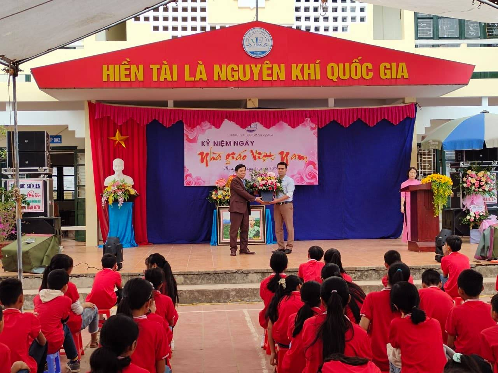.jpg) 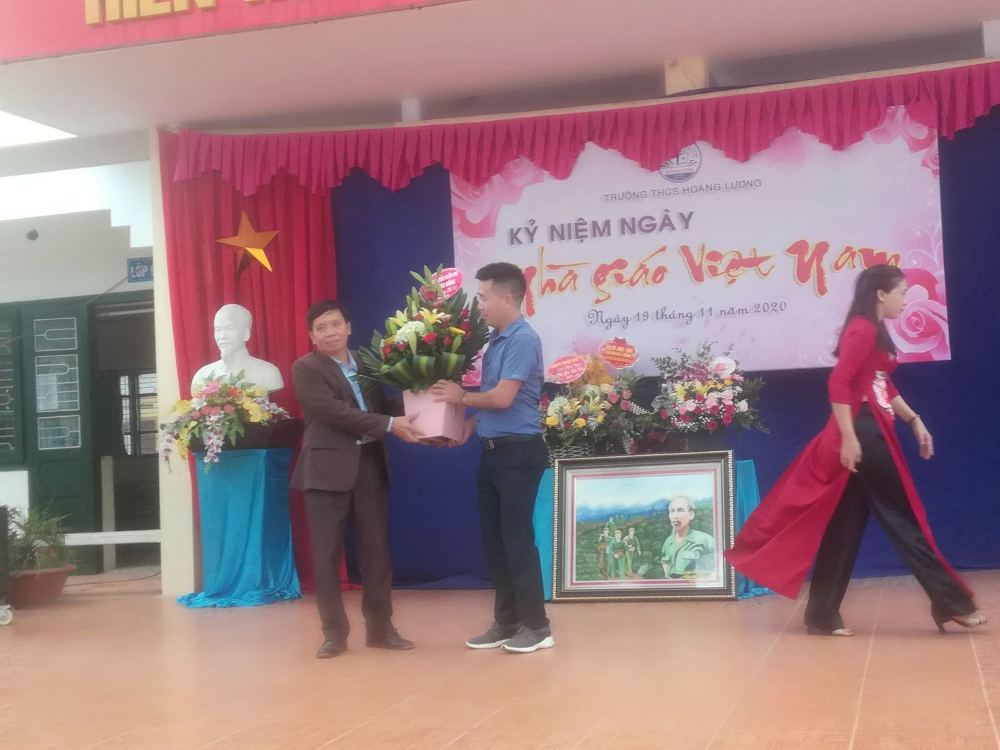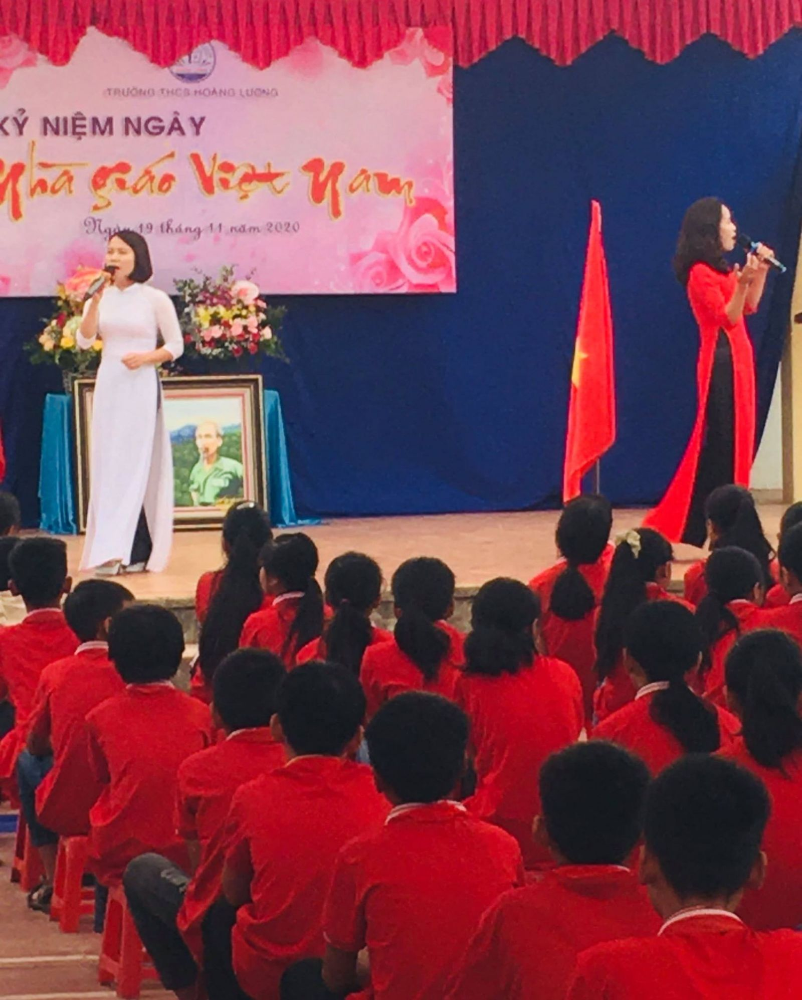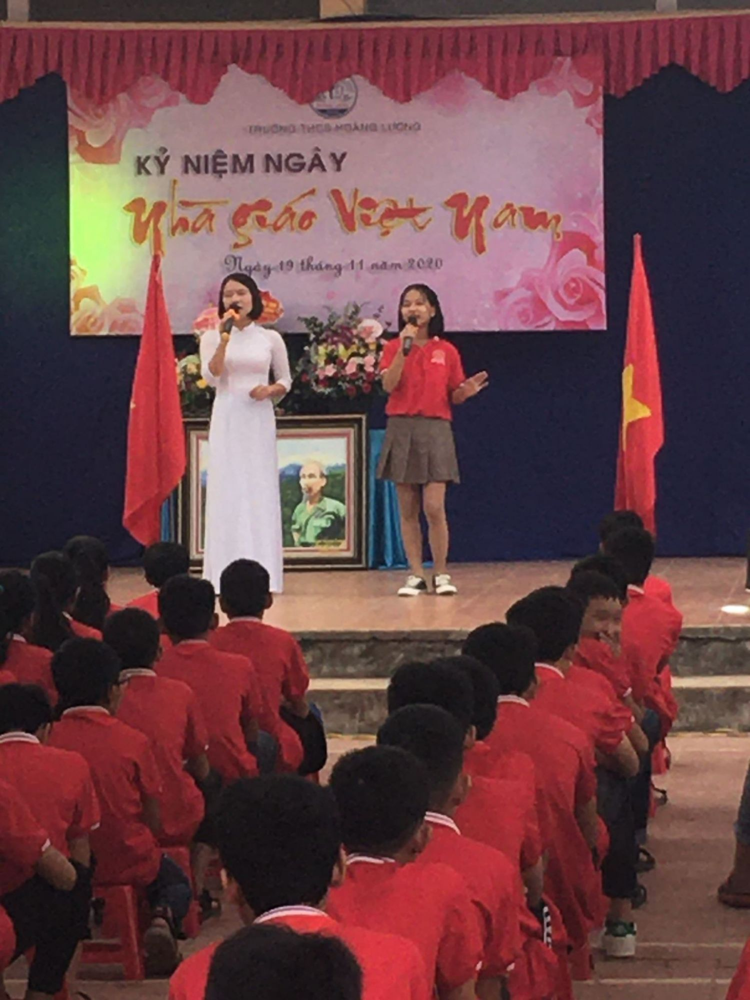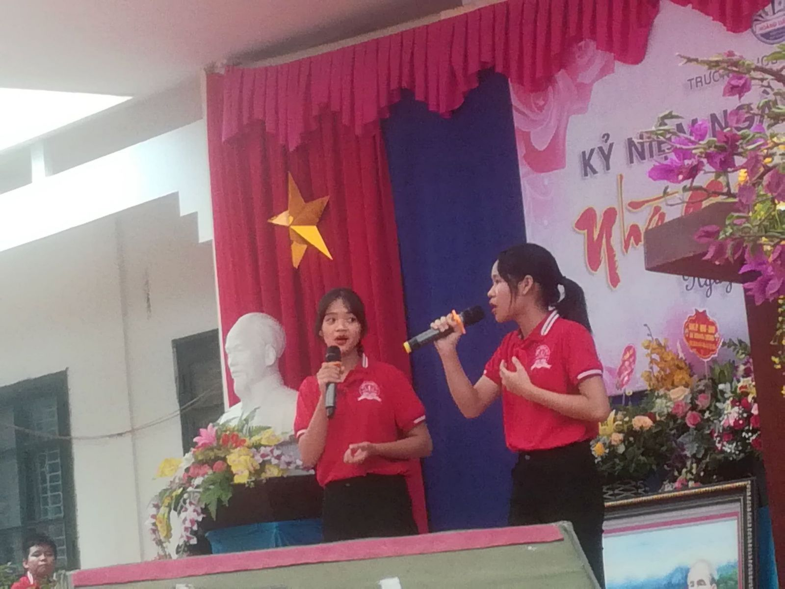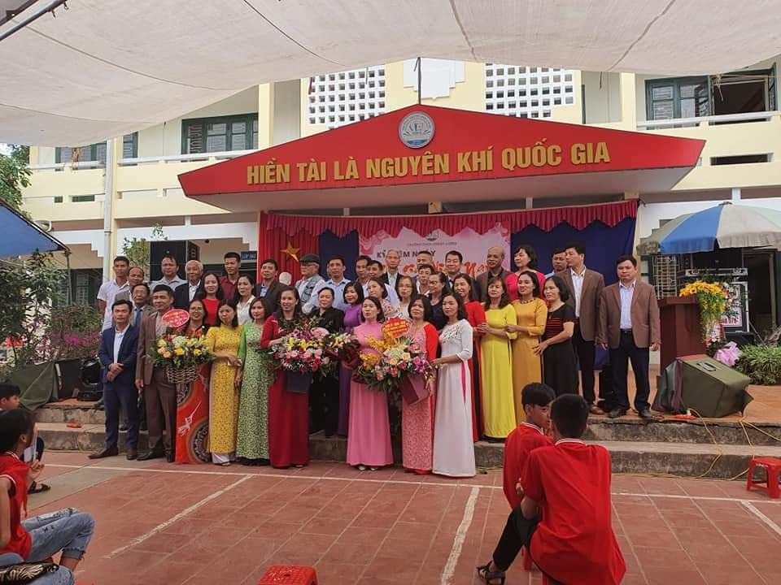
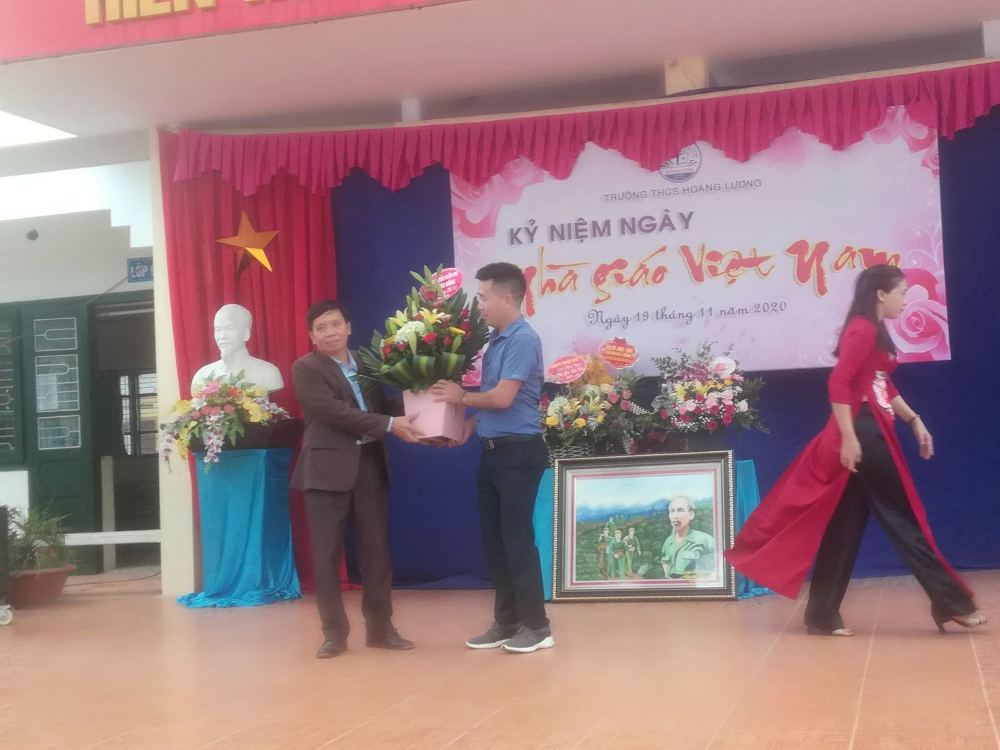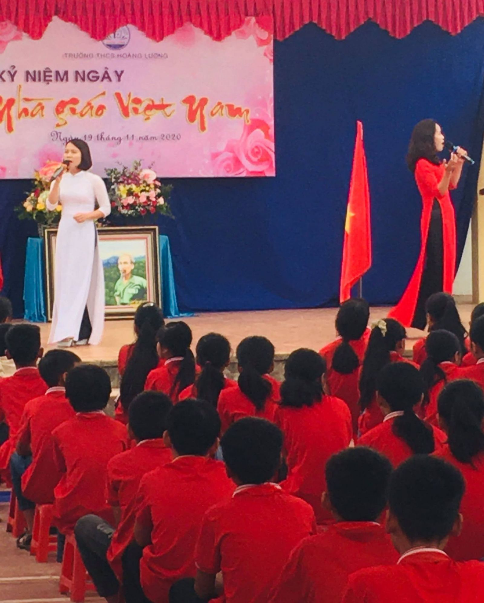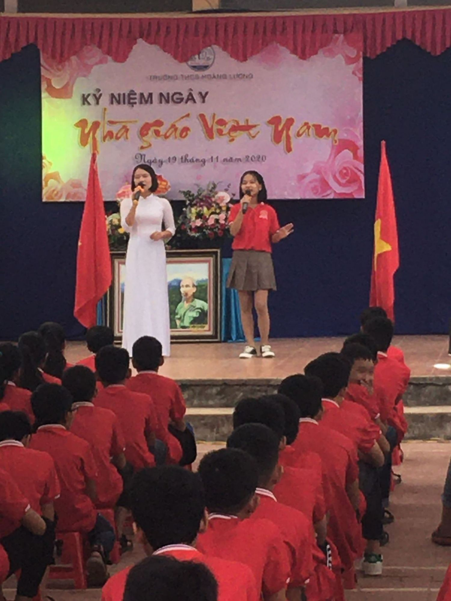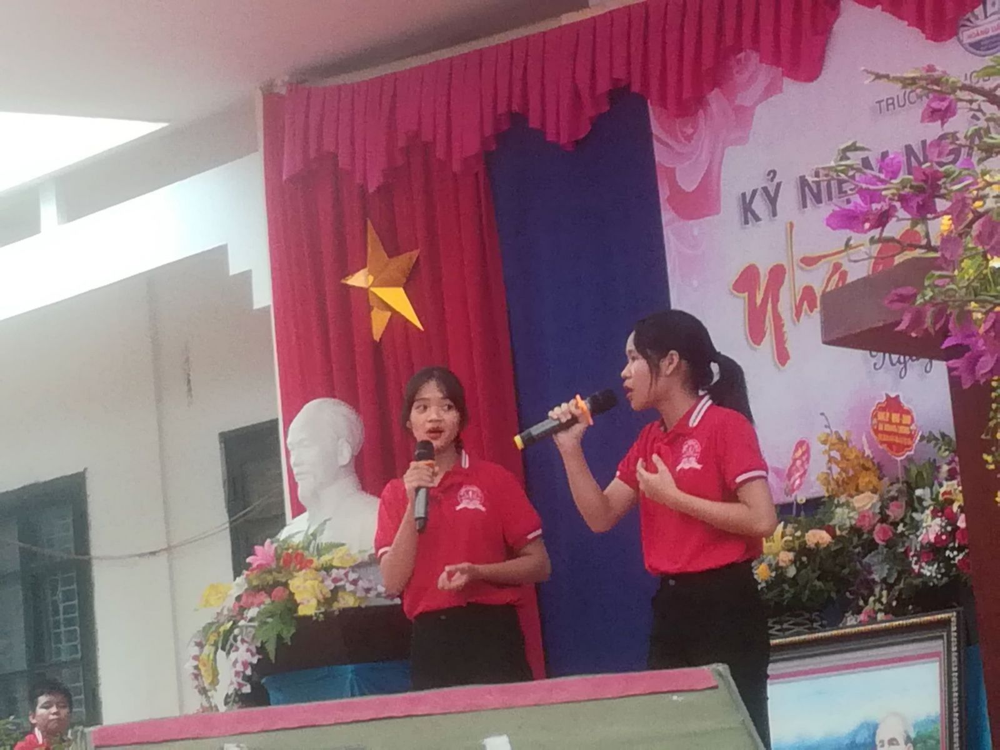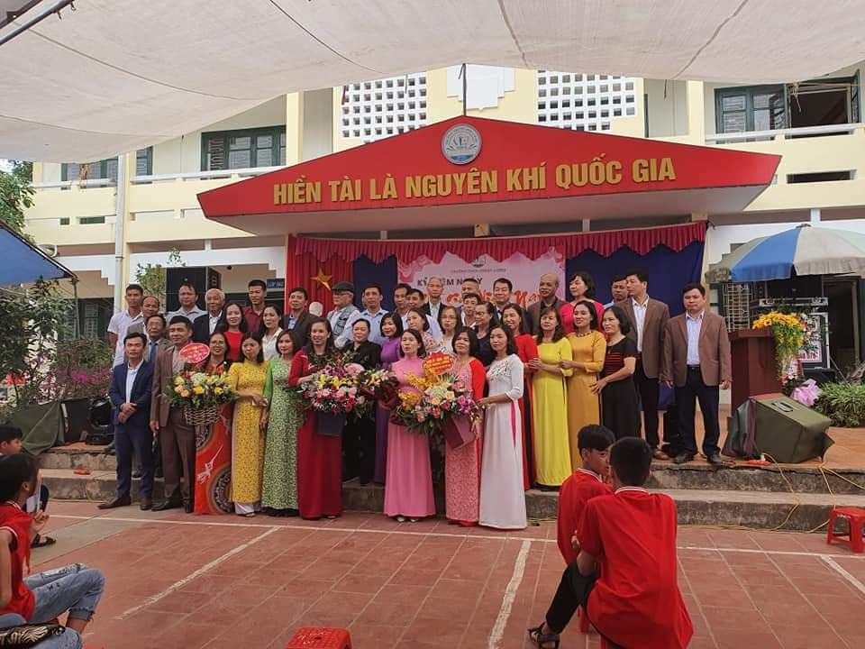